drg. Dhani Agustina, Sp.Ort
Dokter gigi spesialis ortodonti. Memeriksa susunan gigi dan rahang, menyusun rencana perawatan, lalu memasang dan mengontrol kawat gigi atau aligner.
Klinik ortodonti dan estetika gigi di Mulyosari, Surabaya. Kawat gigi Damon, aligner Invisalign dan retainer ditangani dokter gigi spesialis ortodonti, dengan janji temu lewat WhatsApp.
Di Ruko Central Park Mulyosari 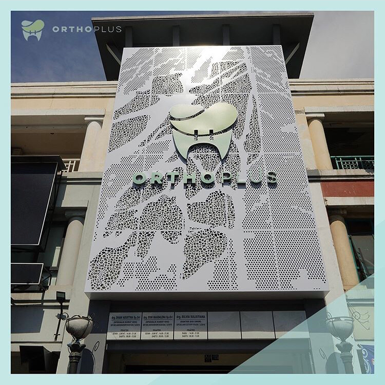 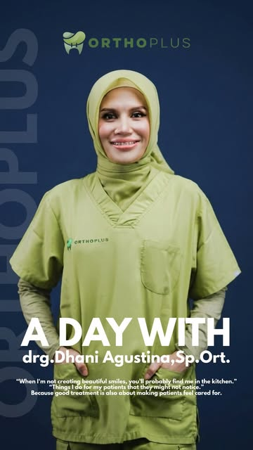
Dua dokter gigi spesialis ortodonti, satu spesialis konservasi gigi dan satu dokter gigi, praktik di satu tempat.
Dokter gigi spesialis ortodonti. Memeriksa susunan gigi dan rahang, menyusun rencana perawatan, lalu memasang dan mengontrol kawat gigi atau aligner.
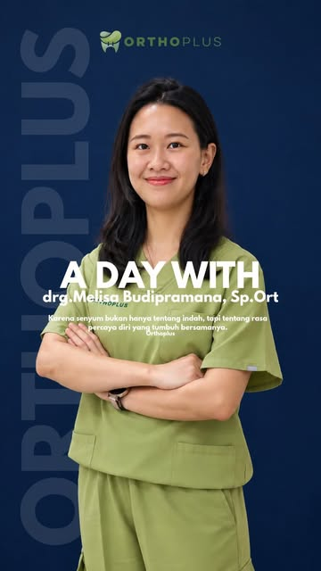
Dokter gigi spesialis ortodonti. Menangani perawatan kawat gigi untuk remaja dan dewasa, dari konsultasi pertama sampai retainer.
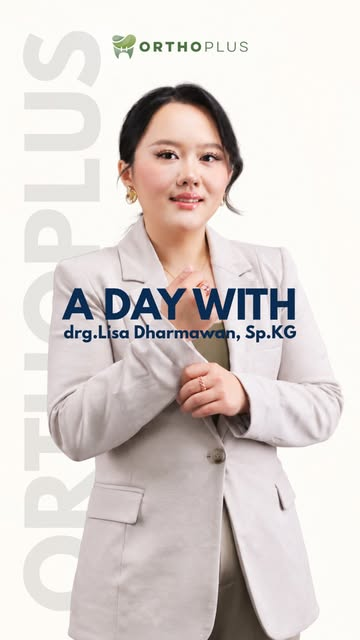
Dokter gigi spesialis konservasi gigi. Perawatan saluran akar dan tambalan sewarna gigi, termasuk sebelum atau selama perawatan ortodonti.
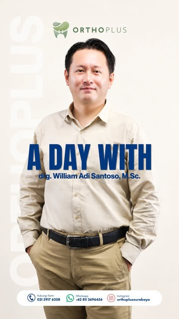
Dokter gigi. Pemeriksaan rutin, pembersihan karang gigi dan perawatan gigi umum untuk pasien keluarga.
Ruang tunggu yang lapang, meja administrasi dan ruang perawatan di lantai dasar Ruko Central Park Mulyosari.
Jenis alat dipilih bersama dokter setelah pemeriksaan, sesuai kondisi gigi, kebiasaan dan anggaran Anda.
Bracket self-ligating dengan penutup geser, tanpa karet pengikat di tiap gigi. Ortho Plus adalah penyedia Damon Ultima; tersedia juga Damon Q2.
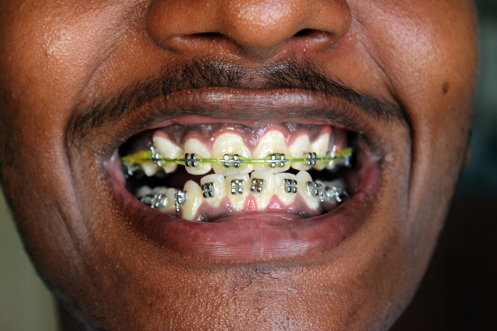
Bracket logam yang kuat untuk kasus ringan sampai kompleks, atau bracket sapphire bening yang menyatu dengan warna gigi.
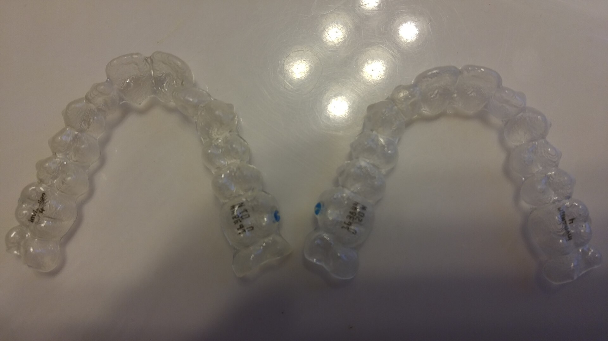
Cetakan bening yang bisa dilepas-pasang dan diganti bertahap sesuai rencana dokter.
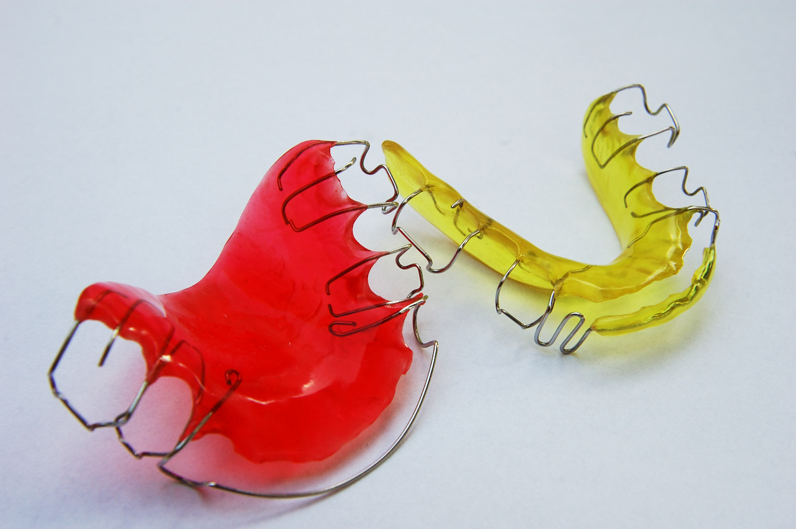
Dipakai setelah kawat dilepas agar gigi tidak kembali ke posisi semula.
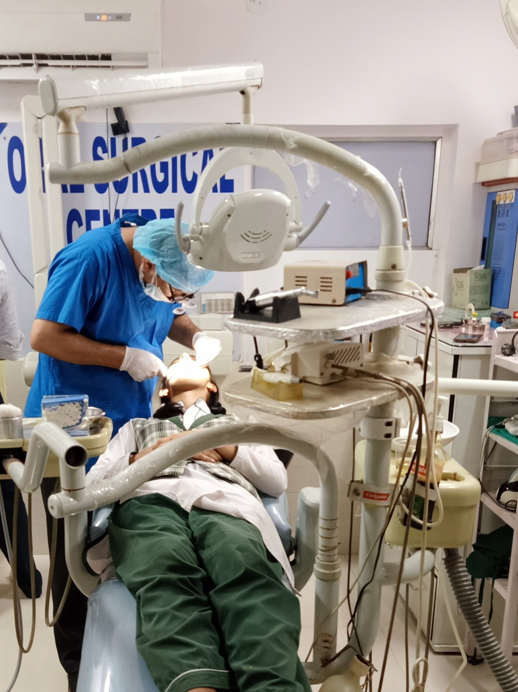
Oleh dokter spesialis konservasi gigi, untuk gigi yang sakit atau berlubang dalam.
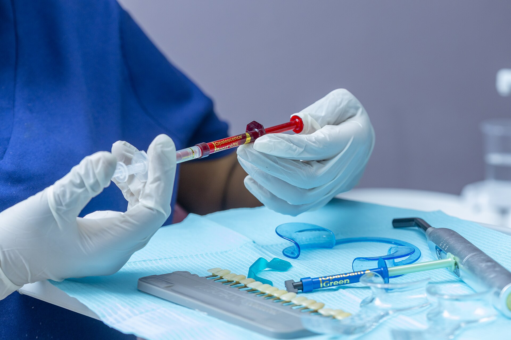
Pembersihan karang gigi secara rutin, dan pemutihan gigi bila kondisi gigi memungkinkan.
Setiap perawatan punya batasan dan risiko, misalnya gigi terasa pegal beberapa hari setelah pemasangan atau kontrol, dan bercak putih pada gigi bila kebersihan mulut kurang terjaga. Dokter menjelaskannya saat konsultasi, sebelum perawatan dimulai.
Perawatan ortodonti berjalan berbulan-bulan. Ini gambaran urutannya, supaya Anda tahu apa yang terjadi di setiap kunjungan.
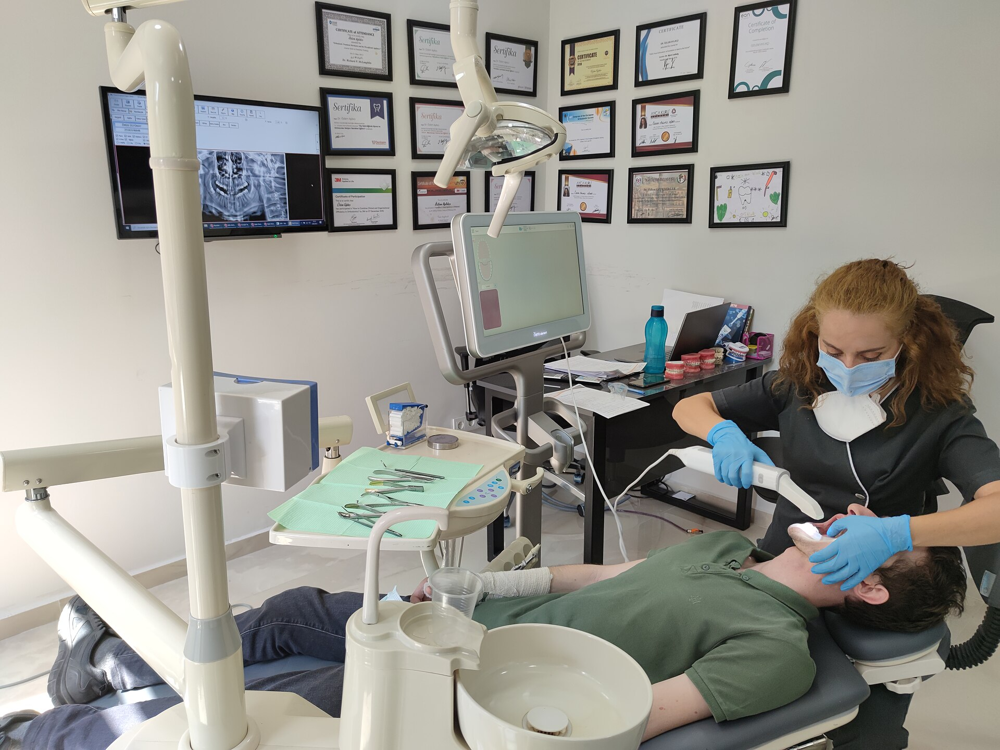
Chat admin, datang konsultasi. Dokter memeriksa gigi, membuat foto rontgen dan memindai gigi secara digital dengan pemindai DEXIS, tanpa cetak gips.
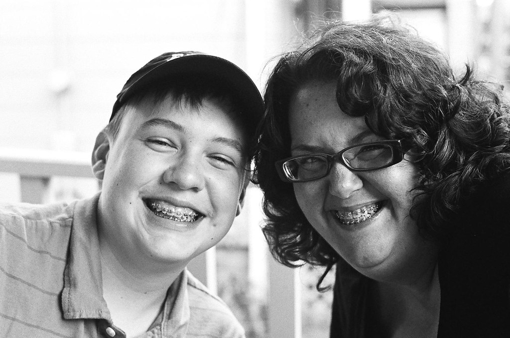
Kawat atau aligner dipasang sesuai rencana. Kontrol rutin beberapa minggu sekali untuk menyesuaikan tekanan.
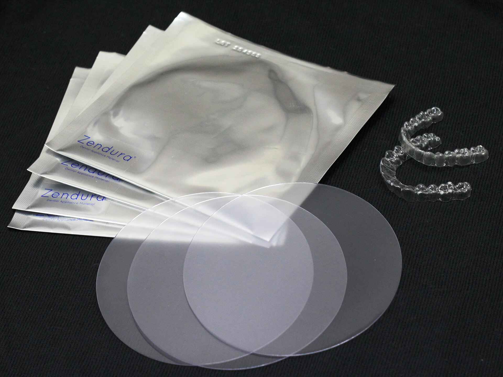
Setelah alat dilepas, retainer dipakai dan posisinya dicek berkala supaya hasil perawatan bertahan.
Umumnya satu setengah sampai tiga tahun, tergantung tingkat kerumitan susunan gigi dan kedisiplinan kontrol. Perkiraan untuk kasus Anda diberikan dokter setelah pemeriksaan.
Pemasangannya sendiri tidak memerlukan suntikan. Gigi biasanya terasa pegal dua sampai lima hari setelah pemasangan atau kontrol, lalu mereda. Makanan lunak membantu di hari-hari itu.
Keduanya bisa merapikan gigi, tetapi tidak semua kasus cocok dengan aligner. Aligner harus dipakai sekitar 22 jam sehari. Dokter akan menyarankan alat yang sesuai setelah melihat kondisi gigi Anda.
Biaya bergantung pada jenis alat dan lama perawatan, jadi rinciannya dijelaskan setelah konsultasi. Untuk gambaran awal, tanyakan langsung ke admin lewat WhatsApp.
Pemeriksaan awal dianjurkan sekitar usia tujuh tahun, saat gigi tetap mulai tumbuh. Belum tentu langsung dipasang alat; sering cukup dipantau. Orang dewasa juga bisa dirawat selama gusi dan tulang penyangga sehat.
Ya. Tanpa retainer gigi cenderung bergeser kembali. Dokter menentukan jenis retainer dan berapa lama harus dipakai setiap hari.
Praktik dengan janji temu. Isi kebutuhan Anda, pesan WhatsApp sudah tersusun dan tinggal dikirim ke admin.
Lihat jadwal praktik di bawah
Jl. Raya Mulyosari No. 11, Kalisari, Mulyorejo, Surabaya 60112
| Senin sampai Jumat | 14.00 – 21.00 |
| Sabtu | 08.00 – 13.00 |
| Minggu | Tutup |
Jadwal tiap dokter bisa berbeda. Tanyakan ke admin sebelum datang.
Petunjuk arah di Google Maps